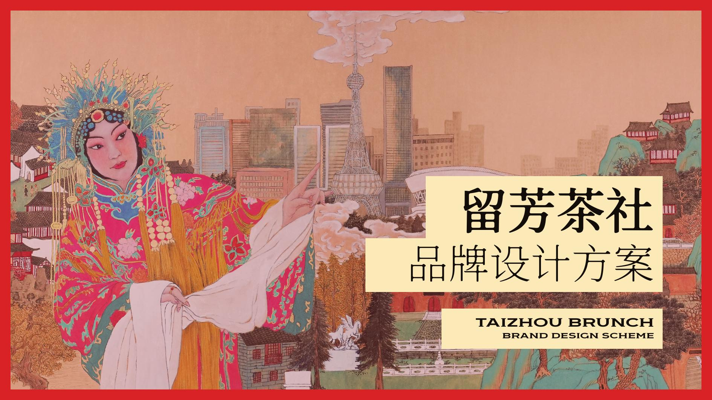
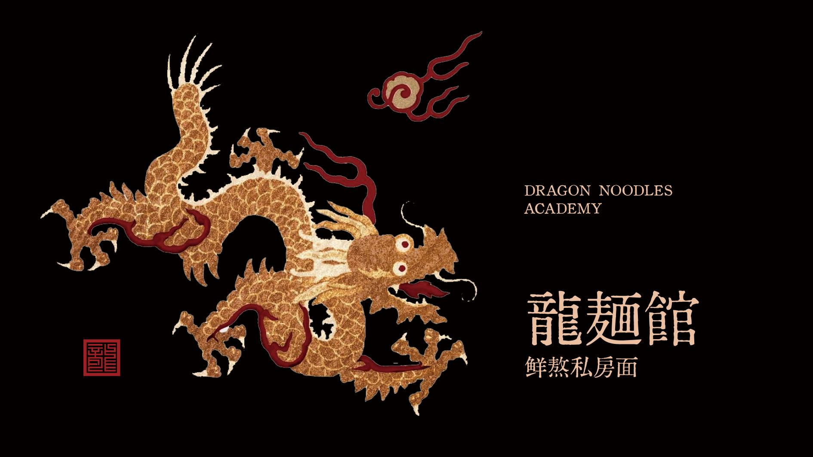

造物社 — 品牌视觉、字体与餐饮全案

稻成酸菜魚
阿成在稻城亚丁旅途中爱上酸菜鱼，辞去都市工作开店，用黄黑配色与猫鱼吉祥物带来片刻治愈。
- 餐饮品牌 · 酸菜鱼
- 黄黑配色与猫鱼吉祥物
- 2024

牛小丫
诸暨根源的潮汕鲜牛肉火锅品牌，礼帽牛头吉祥物与酒红金调，强调三浸三晾的鲜与骨汤养胃。
- 潮汕鲜牛肉火锅
- 礼帽牛头 · 酒红金
- 2022

百老汇小镇
以欧式城堡建筑为图形原型，打造度假、欢乐气质的小镇品牌视觉与环境导视。
- 度假小镇品牌
- 城堡图形与环境导视
- 2023

空杯计划
面向18–20岁大学生的校园现磨快咖啡：人均约15元、带走为主，口号「课程一堆，先喝咖啡」。
- 校园现磨快咖啡
- 带走为主 · 人均约 15 元
- 2023

灵感杯子
Muse Cup Drink Art——调色盘与咖啡杯合体的吉祥物，主张「浓缩的是灵感」。
- 咖啡饮品艺术
- 调色盘与咖啡杯吉祥物
- 2025

留芳茶社
泰州早茶非遗手作：闻芳如故，用戏曲与城市对照的画面留住时间的味道。
- 泰州早茶
- 闻芳如故 · 非遗手作
- 2024

龍麵館
香港风私房面馆：即叫即拉、鲜熬汤底，招牌波士顿龙虾功夫面，书法字融入功夫笔势。
- 鲜熬私房面
- 即叫即拉 · 功夫笔势
- 2025

龍尊軒
新中式精品粤菜：满洲窗棂与龙纹图形，主张经典粤菜的摩登传承。
- 精品粤菜
- 满洲窗棂与龙纹
- 2023
造物社 = 品牌视觉 × 字体 × 餐饮全案
做餐饮，也做需要被记住的消费品牌。从定位和超级符号开始，把字体、包装、IP 与插画收成一套可以反复使用的视觉语言。
不按固定套餐来。先对齐品类、人群和要解决的问题，再决定识别、字体、物料和场景各自走到哪一步。
酸菜鱼、牛肉火锅、早茶、校园咖啡、私房面和精品粤菜，各自长出一套能被反复使用的视觉：吉祥物、字体、包装和导视，都从品类问题出发。
稻成酸菜魚
稻城归来的酸菜鱼店，黄黑猫鱼带来片刻治愈。
牛小丫
礼帽牛头与酒红金，把三浸三晾的鲜说清楚。
百老汇小镇
以城堡为形，把度假和欢乐做成一套导视。
空杯计划
大学生的快咖啡：课程一堆，先喝咖啡。
灵感杯子
调色盘与咖啡杯合体，浓缩的是灵感。
留芳茶社
闻芳如故，把泰州早茶留在时间里。
龍麵館
即叫即拉的香港私房面，书法融入功夫笔势。
龍尊軒
满洲窗与龙纹，经典粤菜的摩登传承。
更早完成的项目，以及仍在补画面的专题。
业务
Brand, type, packaging, and illustration — assembled around a commercial problem, not a fixed menu of deliverables.
以餐饮与消费品牌为主。定位、字体、平面、IP 收成一套视觉语言，用在菜单、包装和门店里。

-
01
品牌全案
策略辅助、超级符号、识别系统与应用规范。从零开始，或把已有品牌升级成能被持续使用的系统。
-
02
字体设计
标题字、品牌专用字与排印气质。文字本身成为资产，而不是事后贴上去的标准字。
-
03
平面与包装
主视觉、包装结构、菜单与空间物料。让识别落到货架、杯套和门店现场。
-
04
IP / 插画
角色、图形语言与场景叙事。给餐饮品牌一个可以被记住的情绪面。
合作
先把问题说清，再交付系统，最后看它在印刷和现场里是否站得住。
-
01
对齐问题
品类、受众、时间和预算。可以先发参考，再决定要不要往下做。
-
02
方向确认
定位关键词、视觉母题和符号方向。确认之后再进入系统。
-
03
系统交付
识别、字体、包装和应用规范，按真实场景延展，而不是只交一张主视觉。
-
04
落地跟进
印刷、门店和上架时的反馈。需要的话，再迭代一版。
Selected
下一道品牌问题，可以从一次合作咨询开始。
合作咨询